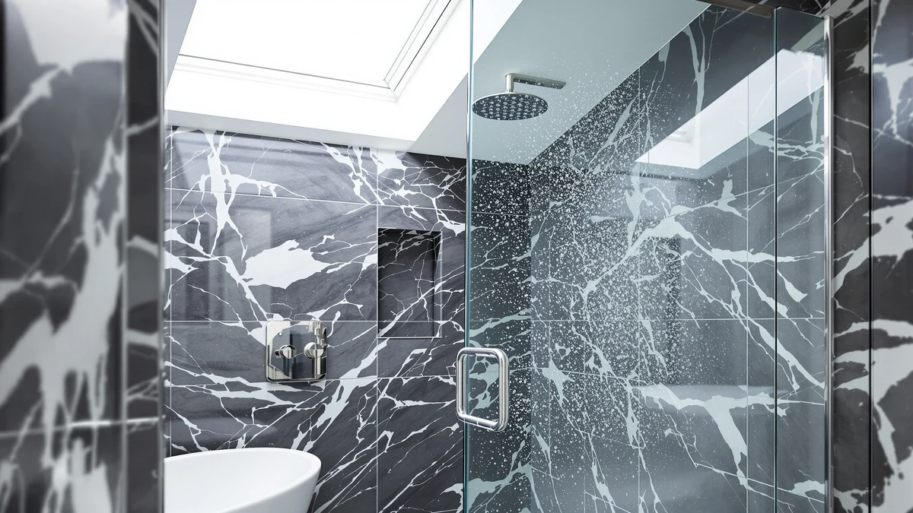

Best Way to Clean Glass Shower Doors with Hard Water Stains: Complete Guide (2026)
Prices and picks verified as of October 2026. Independent, reader-supported reviews.


Things to Know Before You Buy
- Hard water stains are mineral deposits, mostly calcium and magnesium, that bond to glass and etch it over time if left untreated.
- White vinegar, citric acid, and dedicated glass shower cleaners dissolve fresh mineral buildup, while abrasive pads and ammonia-based cleaners can scratch or cloud the glass permanently.
- A squeegee used after every shower prevents most future buildup.
- Deep, cloudy etching that survives a proper acid soak usually means the glass itself is damaged, not dirty, and no cleaner reverses that.
- Frameless and semi-frameless doors show water spots faster than framed ones because more glass surface is exposed to mineral spray.
The best way to clean glass shower doors with hard water stains combines an acidic soak with a non-abrasive scrub, applied before mineral deposits get a chance to etch into the glass. Vinegar, citric acid, and commercial glass cleaners all work on the same principle: they break down calcium and magnesium bonds so you can wipe the residue away instead of scraping at it. Skip that step long enough, and those minerals harden into a haze that no amount of scrubbing fixes.
Most hard water stains start as a thin white film after a handful of showers and get worse every week the door goes unwiped. Homeowners with high mineral content in their tap water see this happen within days, while households on soft or filtered water barely notice buildup at all. Knowing which category your bathroom falls into changes how aggressive your cleaning routine needs to be.
This guide walks through the categories of cleaners and tools that actually work, the criteria for choosing between them, and the mistakes that turn a cleanable stain into a permanently etched door. We also compare a cleaner and a few replacement doors worth considering once your current setup is past the point cleaning alone can fix.
What You Need to Know
Hard water stains form when water with a high mineral content, mostly calcium and magnesium carbonate, evaporates off glass and leaves those minerals behind. Each shower adds a thin new layer, and the layers compound fast in homes with harder municipal or well water. Within a few weeks, a door that looked spotless starts showing a cloudy, chalky film that catches the light at certain angles.
The chemistry matters because it dictates the right tool for the job. Mineral deposits are alkaline, so acids dissolve them efficiently. That is why vinegar (acetic acid), lemon juice (citric acid), and most dedicated glass shower cleaners lean on an acidic formula rather than a soap-based one. Soap and standard all-purpose cleaners do not break the mineral bond, so they smear the film around instead of removing it.
Time is the other variable. Fresh deposits that built up over a week or two respond to a short soak and a light wipe. Deposits that sit for months bond more tightly with the glass, and in some cases begin etching microscopic pits into the surface. At that stage, the best way to clean glass shower doors with hard water stains still involves an acid soak, but you are managing permanent texture rather than removing a removable film. Reviewers who deal with older doors consistently note that a longer soak time, not a harder scrub, gets better results without risking the glass.
Knowing this distinction upfront saves time. A 10-minute vinegar soak solves most recent buildup, while deep etching needs patience, a non-scratch pad, and realistic expectations about how much clarity you can actually restore.
Types and Categories
Cleaning approaches for hard water stains fall into a few broad categories, and each one suits a different stage of buildup.
Acid-based household solutions are the starting point for most people. White vinegar, diluted with water or full-strength for heavier buildup, dissolves fresh mineral film within 10 to 15 minutes of contact time. Lemon juice works on the same principle and leaves a lighter scent, though it is less practical for soaking an entire door.
Commercial glass shower cleaners, built on citric acid or oxalic acid, are formulated specifically for mineral deposits and generally cut through moderate buildup faster than diluted vinegar, since the acid concentration is higher and tuned for this exact job. They cost more per use but save time on doors that get heavy mineral exposure.
Mechanical aids matter as much as the chemical. A soft microfiber cloth or a non-scratch nylon pad lifts dissolved minerals without damaging the glass or any protective coating. Steel wool, abrasive sponges, and scouring powders should stay out of the bathroom entirely; they strip coatings and create fine scratches that trap even more mineral residue going forward.
Preventive products form the last category. Squeegees, rain-repellent glass treatments, and water softeners address the source rather than the symptom. A squeegee used after every shower keeps deposits from forming in the first place, and a water softener reduces the mineral load in the water itself, which cuts down on buildup across the whole bathroom, not only the shower door.
How to Choose
Choosing the right approach starts with how bad the buildup actually is. Light, recent haze responds to a basic vinegar soak and a microfiber wipe, so there is no reason to buy a specialty cleaner for a door that only needs a weekly rinse. Moderate buildup that has sat for a month or more usually calls for a dedicated citric-acid or oxalic-acid cleaner, since the stronger formula cuts cleaning time from thirty minutes of scrubbing down to a few minutes of soaking.
Glass coating is the next factor. Many newer shower doors ship with a factory water-repellent or anti-scale coating, and owners report that aggressive acids or abrasive pads strip that coating faster than normal wear would. Check the manufacturer's care instructions before applying anything beyond a mild vinegar solution to a coated door, since replacing a stripped coating is not something you can do at home.
Water hardness in your area should guide how often you clean, not only what you clean with. Households on municipal supplies with high mineral content need a maintenance routine measured in days, while filtered or softened water stretches that out to weeks. A water test kit, often under $15, tells you exactly where your household falls and whether a whole-home softener would pay for itself in reduced cleaning time.
Finally, weigh the condition of the glass against the cost of a new door. If a thorough acid soak and a non-scratch pad still leave visible cloudiness or rough texture, the glass has likely etched below the surface. At that point, no cleaning product reverses the damage, and the best way to clean glass shower doors with hard water stains shifts from choosing a stronger product to comparing replacement doors instead. Frameless and semi-frameless designs vary widely in price and glass thickness, so it is worth comparing a few before assuming replacement is out of budget.
Common Mistakes to Avoid
The most common mistake is reaching for an abrasive pad or steel wool on tough stains. Scratched glass collects mineral deposits faster than smooth glass, so one aggressive scrubbing session can make every future cleaning harder, not easier.
Mixing cleaning products is the second big error. Combining bleach-based cleaners with acidic ones, even by accident, releases toxic fumes in an enclosed bathroom. Stick to one product at a time and rinse thoroughly before switching.
Letting cleaner sit too long causes problems too. Acidic solutions left on the glass for hours, rather than the recommended 10 to 15 minutes, can damage metal hardware, rubber seals, and any factory coating on the glass. Owners who leave vinegar-soaked towels draped over a door overnight often come back to pitted or discolored hardware they did not expect.
Skipping the rinse step is another frequent oversight. Acid residue left on the glass keeps reacting with minerals in the air and water, which can leave streaks that look like new stains forming within days of a cleaning.
Many people also clean once and stop. A single deep clean without a follow-up squeegee habit resets the clock until the next buildup cycle. Consistent, light maintenance after each shower prevents far more buildup than any single deep-cleaning session, no matter how strong the product.
Care and Maintenance
Daily habits do more for glass clarity than any single cleaning product. A squeegee used right after each shower, while the glass is still wet, removes most of the water before minerals get a chance to evaporate and bond to the surface. It takes under a minute and is the single most effective habit for keeping a shower door clear long term.
A light wipe-down with a vinegar-dampened cloth once a week keeps minor mineral film from accumulating into a visible stain. This takes far less time than the thirty-minute soak needed once buildup has set for a month, so the weekly habit pays for itself.
Rain-repellent glass treatments, applied every few months, create a surface that sheds water and mineral content more easily. They are not a substitute for regular wiping, but they stretch the time between deep cleans and reduce how hard you need to scrub when you do clean.
If your home has notably hard water, a whole-house water softener addresses the root problem rather than only the shower door. It reduces scale buildup on fixtures, appliances, and glass throughout the house, and most owners report a noticeable drop in shower door cleaning frequency within the first month of installation.
Our Top Picks
If your door only needs regular upkeep, a dedicated glass cleaner handles the job faster than diluted vinegar. If the glass is etched beyond saving, comparing replacement doors makes more sense than buying another cleaner. These three options cover both situations.

Editor's Pick
QONS Shower Glass Door Cleaner
Formulated specifically for mineral buildup, this cleaner cuts soak time compared with diluted vinegar and is the first thing to try before assuming a stain is permanent.
$18.59
Check Price on Amazon
Best Value
Frameless Shower Door 44-48" W
For doors with etching too deep to clean away, this frameless panel in the 44 to 48 inch range gives you a clear replacement without the premium price of custom glass.
$273.28
Check Price on Amazon
Premium Choice
Kullavik Frameless Shower Door 56-60"
Sized for larger openings, this frameless door suits bathrooms where a wider stall has outgrown a badly etched original panel.
$399.00
Check Price on AmazonFrequently Asked Questions
Verdict
The best way to clean glass shower doors with hard water stains is simpler than most people expect: an acidic soak, a non-abrasive pad, and a squeegee habit that keeps new mineral deposits from forming in the first place. Diluted vinegar handles light, recent buildup, while a dedicated cleaner like the QONS Shower Glass Door Cleaner cuts soak time on tougher mineral film without resorting to abrasive scrubbing that scratches the glass.
Where cleaning stops working, replacement starts making more sense. Glass that stays cloudy or rough after a proper acid soak has etched below the surface, and no amount of scrubbing reverses that. Comparing frameless replacement panels at that stage saves money in the long run compared with repeatedly buying stronger cleaners for a door that is already damaged.
Whichever path fits your bathroom, consistency matters more than any single product. A minute with a squeegee after each shower prevents far more buildup than an occasional deep clean ever will.